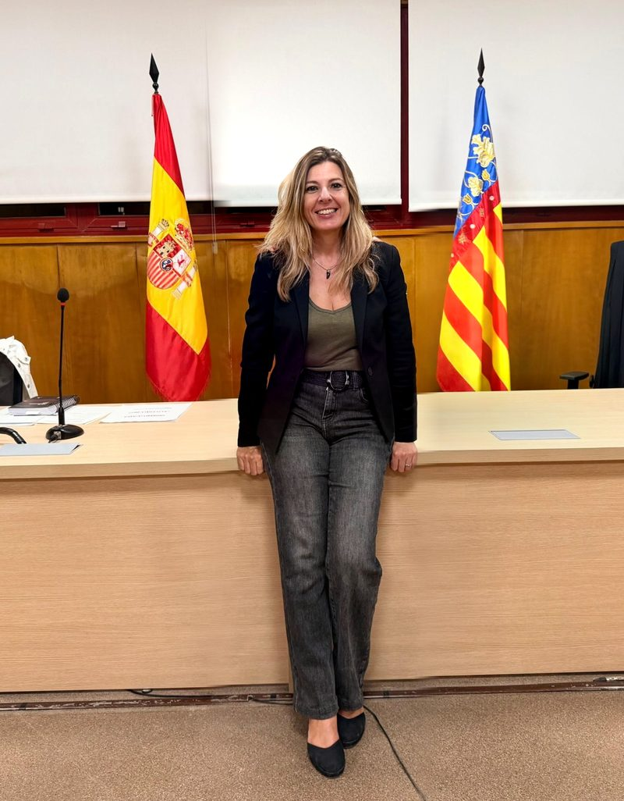
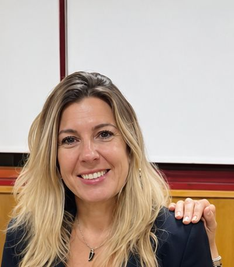
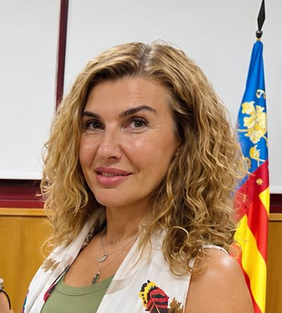
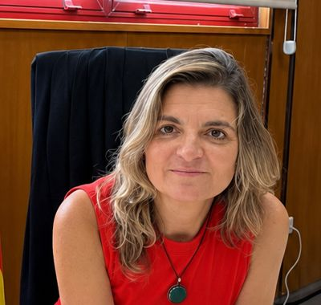
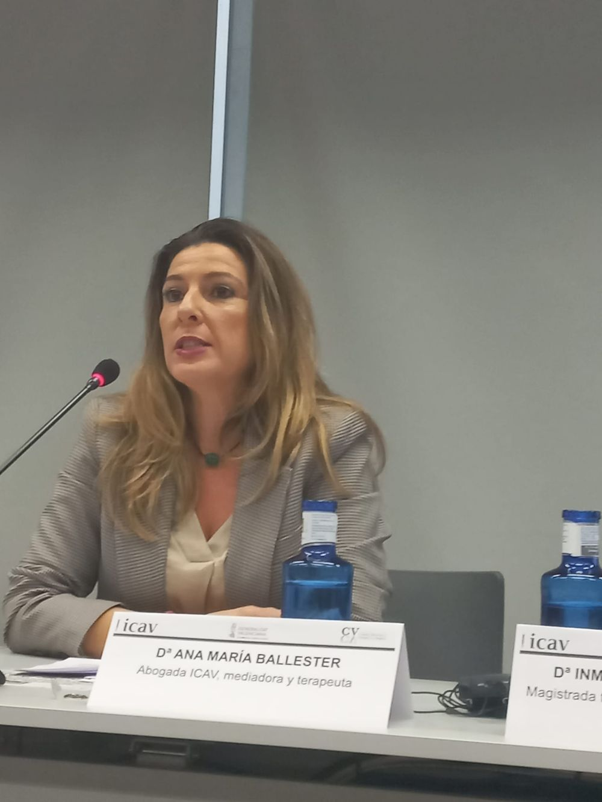
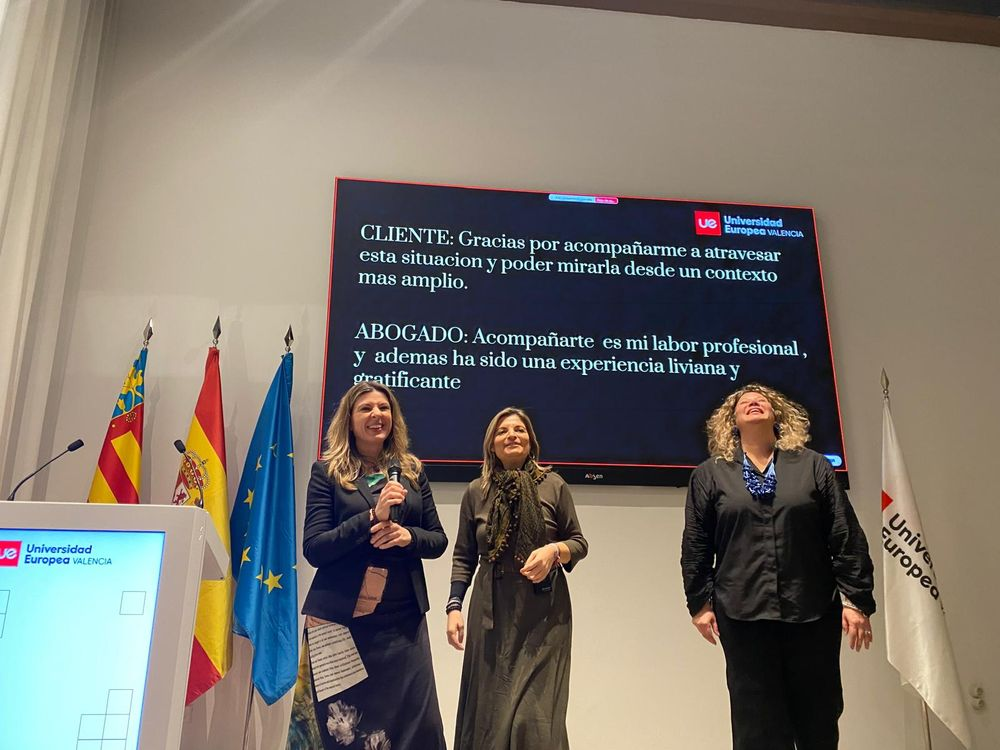
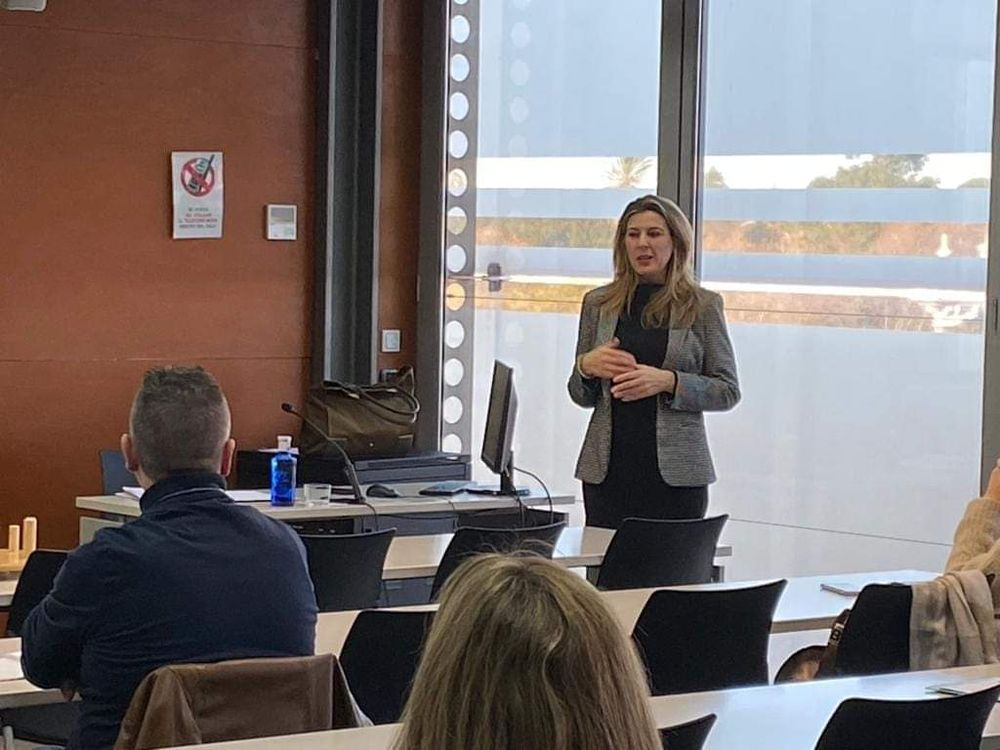
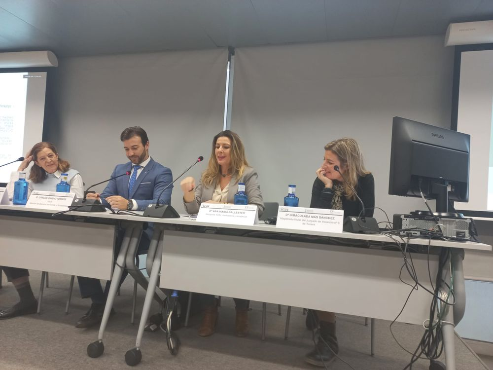
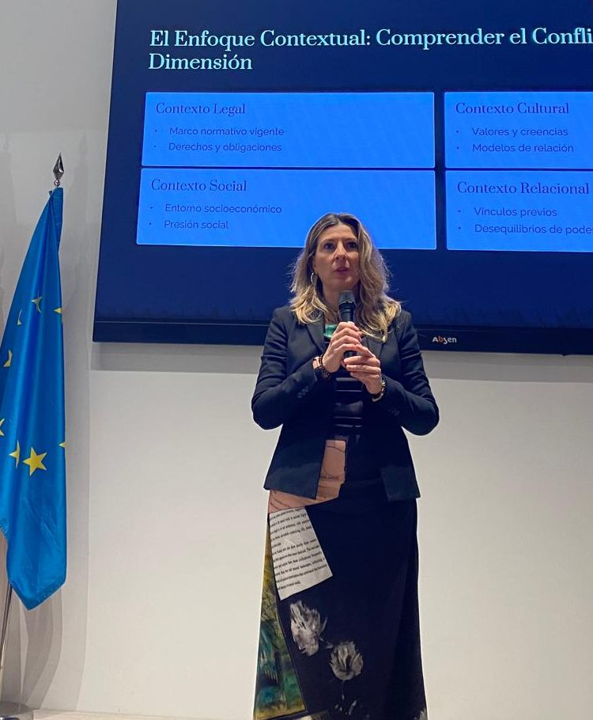
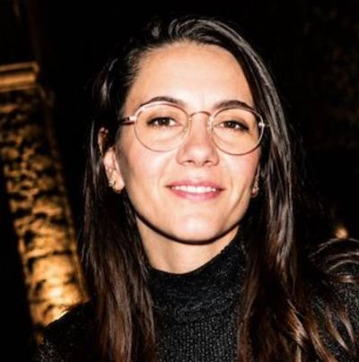

Una mirada más amplia sobre el conflicto
Un conflicto no es únicamente una controversia jurídica. También tiene dimensiones personales, familiares, relacionales, sociales y organizacionales.
Formamos y acompañamos a profesionales que trabajan con conflictos, sufrimiento y decisiones difíciles, para que puedan ejercer con rigor, implicación y límites saludables.
Formación online en directo para España y Latinoamérica.

Formar y acompañar a profesionales del derecho y de la ayuda con autoconocimiento, herramientas prácticas y una comprensión más amplia del conflicto y de su propio lugar en él.
Ser un espacio de referencia en la formación de profesionales del derecho y de la ayuda, impulsando una cultura jurídica más humana, consciente y colaborativa.
En el Instituto Iuris Sana creemos que existe otra forma de comprender y abordar los conflictos.
Detrás de cada conflicto existen relaciones deterioradas, emociones, experiencias personales, necesidades no atendidas y dinámicas familiares u organizacionales que no siempre encuentran respuesta exclusivamente en la aplicación de la norma. Y quien acompaña ese conflicto también se ve afectado por él.
Nuestro propósito es contribuir a una justicia más humana, consciente y responsable, formando profesionales capaces de integrar el rigor jurídico con una comprensión profunda de las personas y sus relaciones.
A través de nuestra formación, la reflexión y la práctica compartida, queremos impulsar una nueva cultura de resolución de conflictos en la que el diálogo, la responsabilidad y el respeto ocupen un lugar esencial.
El conocimiento jurídico sigue siendo necesario. Le sumamos una dimensión de conciencia y responsabilidad profesional.
Un conflicto no es únicamente una controversia jurídica. También tiene dimensiones personales, familiares, relacionales, sociales y organizacionales.
Mayor conciencia de las propias emociones, creencias, límites y responsabilidades, y de cómo influyen en la intervención profesional.
Formas de intervención que, manteniendo el rigor jurídico, favorecen el diálogo, el respeto y la disminución de la confrontación, sin presuponer que todo conflicto deba terminar en acuerdo.
Un espacio para compartir experiencias, revisar casos, aprender de distintas disciplinas y construir relaciones profesionales de confianza.
Ayudar puede generar sobreimplicación, culpa, dificultad para desconectar, exceso de disponibilidad y la sensación de que todo depende del profesional. Esta primera sesión pone nombre a lo que nos ocurre.
Cómo reconocer lo que nos ocurre, acompañar mejor y dejar de cargar con lo que no nos corresponde.
¿Desde qué lugar estoy ayudando?
Te llevarás:
Sesión participativa: microexposiciones, ejercicios individuales, trabajo en grupos pequeños y casos profesionales. Compartir es siempre voluntario. No pretende resolverlo todo, sino generar conciencia y abrir el camino.



Estar presente sin perderse · acompañar sin rescatar · comprometerse sin cargar.
La píldora es el primer paso. El programa completo profundiza en tres talleres online y un taller presencial.
¿Qué me está pasando?
¿Desde qué lugar estoy ayudando?
¿Cómo lo llevo a mi día a día?
Del conocimiento a la experiencia
Te enviaremos fechas, programa y condiciones en cuanto estén disponibles.
Preguntar por WhatsAppFormaciones e intervenciones con el Colegio de la Abogacía de Valencia y la Universidad Europea de Valencia.





Ana es abogada del Colegio de la Abogacía de Valencia y mediadora. Desde su práctica diaria con conflictos familiares comprobó que muchas controversias jurídicas no se resuelven solo con la aplicación de la norma: detrás hay relaciones, emociones y dinámicas que también piden ser atendidas.
De esa experiencia nace el Instituto Iuris Sana: un espacio para formar y acompañar a profesionales del derecho y de la ayuda mediante otra forma de mirar el conflicto, sin perder el rigor jurídico.
«El Instituto nace de una inquietud profunda: la necesidad de ampliar la manera en que los profesionales comprendemos, abordamos y acompañamos los conflictos humanos.»Ana Ballester GarcíaConoce más sobre Ana en anaballestergarcia.com
Abogada con una larga trayectoria profesional. Participa como formadora en los programas del Instituto.

Licenciada en ADE y máster en Negocios Digitales. Lleva el marketing y la comunicación del Instituto.
Para dudas sobre las formaciones o colaboraciones con colegios profesionales, universidades o instituciones, escríbenos por WhatsApp o déjanos tu mensaje.
info@institutoiurisana.com